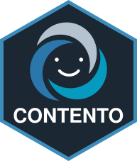

podman run --rm -p 3838:3838 ghcr.io/klemonlab/contento:latestIntroduction
CONTENTO
CONTrast ExploratioN Toolkit for Omics!

Documentation
Full documentation, including tutorials for creating SE and annotation files, is available at: https://klemonlab.github.io/CONTENTO/
Running CONTENTO
CONTENTO can be run in two ways. We recommend the container, since it ships with R1, Bioconductor2, and every dependency pre-installed, and behaves identically on any operating system.
CONTENTO is built with shiny3 and uses DESeq24, fgsea5, msigdbr6, ComplexHeatmap7, circlize8 and ComplexUpset9,10 for its analyses and visualizations.
Option 1: Run the container (recommended)
A container bundles the app together with everything it needs to run. You only need to install a container runtime once:
- macOS and Windows: Podman Desktop, free and open source. Docker Desktop also works, but requires a paid subscription at larger organizations (more than 250 employees or more than $10 million in annual revenue), which usually includes universities and hospitals.
- Linux: Docker Engine or Podman, both free and available from your distribution’s package manager.
Then start CONTENTO from a terminal (with Podman Desktop running):
If you use Docker, replace podman with docker; the rest of the command is identical. The first run downloads the image, which takes a few minutes. When the terminal shows Listening on http://0.0.0.0:3838, open your web browser and navigate to:
http://localhost:3838Press Ctrl+C in the terminal to stop the app.
Loading your data. Upload your SE file in the app’s sidebar, and an annotation file from the load panel if needed. Built-in annotations are included in the container and load automatically when metadata(se)$annotation names one of them. Uploaded files are only kept for the current session.
Trying CONTENTO with example data. The example SE files are not included in the container. Download them from inst/extdata/SE and upload them in the sidebar. See Create SE for CONTENTO for how they were built.
Using your own annotation files. To load your own annotation files automatically instead of uploading them each session, mount the folder that contains them and point CONTENTO_ANNOTATION_DIR to it:
podman run --rm -p 3838:3838 \
-v /path/to/annotations:/annotations:ro \
-e CONTENTO_ANNOTATION_DIR=/annotations \
ghcr.io/klemonlab/contento:latestPinning a version. latest always points to the newest release. For analyses you intend to publish, replace latest with a specific release version (see Releases) and report that version in your methods:
podman run --rm -p 3838:3838 ghcr.io/klemonlab/contento:1.0.0Building the image yourself. A Dockerfile is included in the repository, so you can build and run the image locally from the cloned repository:
podman build -t contento .
podman run --rm -p 3838:3838 contentoOption 2: Run locally within R/RStudio
Some users may prefer to execute CONTENTO directly from an existing R installation, usually used in conjunction with the popular IDE RStudio11. This requires R ≥ 4.4 and Bioconductor ≥ 3.19, the versions used in the container.
Clone the CONTENTO repository:
git clone https://github.com/klemonlab/contento.gitAfter opening the project (CONTENTO.Rproj) within Rstudio, install the dependencies by running:
install.packages(c(
"shiny",
"shinydashboard",
"shinycssloaders",
"DT",
"plotly",
"tidyverse",
"purrr",
"viridis",
"RColorBrewer",
"ComplexUpset",
"scales",
"ggiraph",
"gridExtra",
"patchwork"
))
if (!requireNamespace("BiocManager"))
install.packages("BiocManager")
BiocManager::install(c(
"ComplexHeatmap",
"DESeq2",
"fgsea",
"msigdbr",
"circlize",
"SummarizedExperiment"
))Open app.R in RStudio and click the interactive :arrow_forward: Run App button, or execute:
shiny::runApp("app.R")The application will then become available in your web browser.
Citation
If you use this application in scientific work, please cite:
F. Escapa, I. & Lemon, K. P. “CONTENTO: CONTrast ExploratioN Toolkit for Omics”. https://github.com/KLemonLab/CONTENTO
DOI: https://doi.org/10.5281/zenodo.21629492
This DOI always resolves to the latest release; the DOI for each specific version is listed on the Zenodo page.
Funding
This work was supported by the National Institute of General Medical Sciences (NIGMS) of the National Institutes of Health under award number R35GM141806, and by the National Institute of Allergy and Infectious Diseases (NIAID) under award number U19AI157981. The content is solely the responsibility of the authors and does not necessarily represent the official views of the National Institutes of Health.
License
This project is licensed under the GNU General Public License v3.0 or later (GPL-3.0-or-later).
Contact
Issues, bug reports, and feature requests are welcome through the GitHub issue tracker.
References
1.
R Core Team. R: A Language and Environment for Statistical Computing. (R Foundation for Statistical Computing, Vienna, Austria, 2021).
2.
Huber, W. et al. Orchestrating high-throughput genomic analysis with Bioconductor. Nature Methods 12, 115–121 (2015).
3.
4.
Love, M. I., Huber, W. & Anders, S. Moderated estimation of fold change and dispersion for RNA-seq data with DESeq2. Genome Biology 15, 550 (2014).
5.
Korotkevich, G. et al. Fast gene set enrichment analysis. (2016) doi:10.1101/060012.
6.
Dolgalev, I. msigdbr: MSigDB Gene Sets for Multiple Organisms in a Tidy Data Format. (2025). doi:10.32614/CRAN.package.msigdbr.
7.
Gu, Z., Eils, R. & Schlesner, M. Complex heatmaps reveal patterns and correlations in multidimensional genomic data. Bioinformatics 32, 2847–2849 (2016).
8.
Gu, Z., Gu, L., Eils, R., Schlesner, M. & Brors, B. circlize implements and enhances circular visualization in R. Bioinformatics 30, 2811–2812 (2014).
9.
Krassowski, M., Arts, M., Lagger, C. & Max. ComplexUpset: Create Complex UpSet Plots Using ggplot2 Components. (2022). doi:10.5281/zenodo.3700590.
10.
Lex, A., Gehlenborg, N., Strobelt, H., Vuillemot, R. & Pfister, H. UpSet: Visualization of intersecting sets. IEEE Transactions on Visualization and Computer Graphics 20, 1983–1992 (2014).
11.
Posit team. RStudio: Integrated Development Environment for R. (Posit Software, PBC, Boston, MA, 2026).